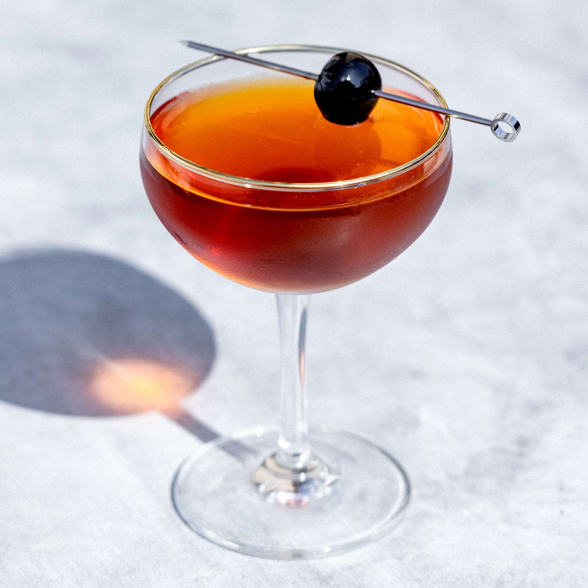

Description
A manhattan is the ultimate gentleman's drink. Neither too unattainable for the every day
man, nor too common for the distinguished. It's a beautiful combination of class and comraderie.
In this recipe I hope to provide you a means of crafting this simply elegant, gentleman's drink
without the bells and whistles (or my life story).
Now, lets get to it!
Ingredients
- 2oz Whiskey (whatever kind you fancy, really)
- 1oz Vermouth (sweet or dry, whatever you like)
- 2 Dashes of Bitters (really can't go wrong with Angostura)
- 1 Maraschino Cherry
Steps
- Put your glass of choice into the freezer as we will not be using ice cubes in the drink itself
- Combine Whiskey, Vermouth, and Bitters into a mixer glass (or bottom half of a shaker). Add ice
and stir in circles until chilled
- Strain into your chilled glass
- Garnish with a maraschino cherry
- Enjoy!
Take me back